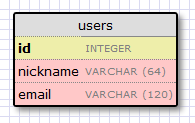

The Flask Mega-Tutorial, Part IV: Database (2012)
Posted by
on under(Great news! There is a new version of this tutorial!)
This is the fourth article in the series in which I document my experience writing web applications in Python using the Flask microframework.
The goal of the tutorial series is to develop a decently featured microblogging application that demonstrating total lack of originality I have decided to call microblog.
NOTE: This article was revised in September 2014 to be in sync with current versions of Python and Flask.
Here is an index of all the articles in the series that have been published to date:
- Part I: Hello, World!
- Part II: Templates
- Part III: Web Forms
- Part IV: Database (this article)
- Part V: User Logins
- Part VI: Profile Page And Avatars
- Part VII: Unit Testing
- Part VIII: Followers, Contacts And Friends
- Part IX: Pagination
- Part X: Full Text Search
- Part XI: Email Support
- Part XII: Facelift
- Part XIII: Dates and Times
- Part XIV: I18n and L10n
- Part XV: Ajax
- Part XVI: Debugging, Testing and Profiling
- Part XVII: Deployment on Linux (even on the Raspberry Pi!)
- Part XVIII: Deployment on the Heroku Cloud
Recap
In the previous chapter of the series we created our login form, complete with submission and validation.
In this article we are going to create our database and set it up so that we can record our users in it.
To follow this chapter along you need to have the microblog app as we left it at the end of the previous chapter. Please make sure the app is installed and running.
Running Python scripts from the command line
In this chapter we are going to write a few scripts that simplify the management of our database. Before we get into that let's review how a Python script is executed on the command line.
If you are on Linux or OS X, then scripts have to be given executable permission, like this:
$ chmod a+x script.py
The script has a shebang line, which points to the interpreter that should be used. A script that has been given executable permission and has a shebang line can be executed simply like this:
./script.py <arguments>
On Windows, however, this does not work, and instead you have to provide the script as an argument to the chosen Python interpreter:
$ flask\Scripts\python script.py <arguments>
To avoid having to type the path to the Python interpreter you can add your microblog/flask/Scripts directory to the system path, making sure it appears before your regular Python interpreter. This can be temporarily achieved by activating the virtual environment with the following command:
$ flask\Scripts\activate
From now on, in this tutorial the Linux/OS X syntax will be used for brevity. If you are on Windows remember to convert the syntax appropriately.
Databases in Flask
We will use the Flask-SQLAlchemy extension to manage our application. This extension provides a wrapper for the SQLAlchemy project, which is an Object Relational Mapper or ORM.
ORMs allow database applications to work with objects instead of tables and SQL. The operations performed on the objects are translated into database commands transparently by the ORM. Knowing SQL can be very helpful when working with ORMs, but we will not be learning SQL in this tutorial, we will let Flask-SQLAlchemy speak SQL for us.
Migrations
Most database tutorials I've seen cover creation and use of a database, but do not adequately address the problem of updating a database as the application grows. Typically you end up having to delete the old database and create a new one each time you need to make updates, losing all the data. And if the data cannot be recreated easily you may be forced to write export and import scripts yourself.
Luckily, we have a much better option.
We are going to use SQLAlchemy-migrate to keep track of database updates for us. It adds a bit of work to get a database started, but that is a small price to pay for never having to worry about manual database migrations.
Enough theory, let's get started!
Configuration
For our little application we will use a sqlite database. The sqlite databases are the most convenient choice for small applications, as each database is stored in a single file and there is no need to start a database server.
We have a couple of new configuration items to add to our config file (file config.py):
import os
basedir = os.path.abspath(os.path.dirname(__file__))
SQLALCHEMY_DATABASE_URI = 'sqlite:///' + os.path.join(basedir, 'app.db')
SQLALCHEMY_MIGRATE_REPO = os.path.join(basedir, 'db_repository')
The SQLALCHEMY_DATABASE_URI is required by the Flask-SQLAlchemy extension. This is the path of our database file.
The SQLALCHEMY_MIGRATE_REPO is the folder where we will store the SQLAlchemy-migrate data files.
Finally, when we initialize our app we also need to initialize our database. Here is our updated package init file (file app/__init__.py):
from flask import Flask
from flask_sqlalchemy import SQLAlchemy
app = Flask(__name__)
app.config.from_object('config')
db = SQLAlchemy(app)
from app import views, models
Note the two changes we have made to our init script. We are now creating a db object that will be our database, and we are also importing a new module called models. We will write this module next.
The database model
The data that we will store in our database will be represented by a collection of classes that are referred to as the database models. The ORM layer will do the translations required to map objects created from these classes into rows in the proper database table.
Let's start by creating a model that will represent our users. Using the WWW SQL Designer tool, I have made the following diagram to represent our users table:

The id field is usually in all models, and is used as the primary key. Each user in the database will be assigned a unique id value, stored in this field. Luckily this is done automatically for us, we just need to provide the id field.
The nickname and email fields are defined as strings (or VARCHAR in database jargon), and their maximum lengths are specified so that the database can optimize space usage.
Now that we have decided what we want our users table to look like, the job of translating that into code is pretty easy (file app/models.py):
from app import db
class User(db.Model):
id = db.Column(db.Integer, primary_key=True)
nickname = db.Column(db.String(64), index=True, unique=True)
email = db.Column(db.String(120), index=True, unique=True)
def __repr__(self):
return '<User %r>' % (self.nickname)
The User class that we just created contains several fields, defined as class variables. Fields are created as instances of the db.Column class, which takes the field type as an argument, plus other optional arguments that allow us, for example, to indicate which fields are unique and indexed.
The __repr__ method tells Python how to print objects of this class. We will use this for debugging.
Creating the database
With the configuration and model in place we are now ready to create our database file. The SQLAlchemy-migrate package comes with command line tools and APIs to create databases in a way that allows easy updates in the future, so that is what we will use. I find the command line tools a bit awkward to use, so instead I have written my own set of little Python scripts that invoke the migration APIs.
Here is a script that creates the database (file db_create.py):
#!flask/bin/python
from migrate.versioning import api
from config import SQLALCHEMY_DATABASE_URI
from config import SQLALCHEMY_MIGRATE_REPO
from app import db
import os.path
db.create_all()
if not os.path.exists(SQLALCHEMY_MIGRATE_REPO):
api.create(SQLALCHEMY_MIGRATE_REPO, 'database repository')
api.version_control(SQLALCHEMY_DATABASE_URI, SQLALCHEMY_MIGRATE_REPO)
else:
api.version_control(SQLALCHEMY_DATABASE_URI, SQLALCHEMY_MIGRATE_REPO, api.version(SQLALCHEMY_MIGRATE_REPO))
Note how this script is completely generic. All the application specific pathnames are imported from the config file. When you start your own project you can just copy the script to the new app's directory and it will work right away.
To create the database you just need to execute this script (remember that if you are on Windows the command is slightly different):
./db_create.py
After you run the command you will have a new app.db file. This is an empty sqlite database, created from the start to support migrations. You will also have a db_repository directory with some files inside. This is the place where SQLAlchemy-migrate stores its data files. Note that we do not regenerate the repository if it already exists. This will allow us to recreate the database while leaving the existing repository if we need to.
Our first migration
Now that we have defined our model, we can incorporate it into our database. We will consider any changes to the structure of the app database a migration, so this is our first, which will take us from an empty database to a database that can store users.
To generate a migration I use another little Python helper script (file db_migrate.py):
#!flask/bin/python
import imp
from migrate.versioning import api
from app import db
from config import SQLALCHEMY_DATABASE_URI
from config import SQLALCHEMY_MIGRATE_REPO
v = api.db_version(SQLALCHEMY_DATABASE_URI, SQLALCHEMY_MIGRATE_REPO)
migration = SQLALCHEMY_MIGRATE_REPO + ('/versions/%03d_migration.py' % (v+1))
tmp_module = imp.new_module('old_model')
old_model = api.create_model(SQLALCHEMY_DATABASE_URI, SQLALCHEMY_MIGRATE_REPO)
exec(old_model, tmp_module.__dict__)
script = api.make_update_script_for_model(SQLALCHEMY_DATABASE_URI, SQLALCHEMY_MIGRATE_REPO, tmp_module.meta, db.metadata)
open(migration, "wt").write(script)
api.upgrade(SQLALCHEMY_DATABASE_URI, SQLALCHEMY_MIGRATE_REPO)
v = api.db_version(SQLALCHEMY_DATABASE_URI, SQLALCHEMY_MIGRATE_REPO)
print('New migration saved as ' + migration)
print('Current database version: ' + str(v))
The script looks complicated, but it doesn't really do much. The way SQLAlchemy-migrate creates a migration is by comparing the structure of the database (obtained in our case from file app.db) against the structure of our models (obtained from file app/models.py). The differences between the two are recorded as a migration script inside the migration repository. The migration script knows how to apply a migration or undo it, so it is always possible to upgrade or downgrade a database format.
While I have never had problems generating migrations automatically with the above script, I could see that sometimes it would be hard to determine what changes were made just by comparing the old and the new format. To make it easy for SQLAlchemy-migrate to determine the changes I never rename existing fields, I limit my changes to adding or removing models or fields, or changing types of existing fields. And I always review the generated migration script to make sure it is right.
It goes without saying that you should never attempt to migrate your database without having a backup, in case something goes wrong. Also never run a migration for the first time on a production database, always make sure the migration works correctly on a development database.
So let's go ahead and record our migration:
$ ./db_migrate.py
And the output from the script will be:
New migration saved as db_repository/versions/001_migration.py
Current database version: 1
The script shows where the migration script was stored, and also prints the current database version. The empty database version was version 0, after we migrated to include users we are at version 1.
Database upgrades and downgrades
By now you may be wondering why is it that important to go through the extra hassle of recording database migrations.
Imagine that you have your application in your development machine, and also have a copy deployed to a production server that is online and in use.
Let's say that for the next release of your app you have to introduce a change to your models, for example a new table needs to be added. Without migrations you would need to figure out how to change the format of your database, both in your development machine and then again in your server, and this could be a lot of work.
If you have database migration support, then when you are ready to release the new version of the app to your production server you just need to record a new migration, copy the migration scripts to your production server and run a simple script that applies the changes for you. The database upgrade can be done with this little Python script (file db_upgrade.py):
#!flask/bin/python
from migrate.versioning import api
from config import SQLALCHEMY_DATABASE_URI
from config import SQLALCHEMY_MIGRATE_REPO
api.upgrade(SQLALCHEMY_DATABASE_URI, SQLALCHEMY_MIGRATE_REPO)
v = api.db_version(SQLALCHEMY_DATABASE_URI, SQLALCHEMY_MIGRATE_REPO)
print('Current database version: ' + str(v))
When you run the above script, the database will be upgraded to the latest revision, by applying the migration scripts stored in the database repository.
It is not a common need to have to downgrade a database to an old format, but just in case, SQLAlchemy-migrate supports this as well (file db_downgrade.py):
#!flask/bin/python
from migrate.versioning import api
from config import SQLALCHEMY_DATABASE_URI
from config import SQLALCHEMY_MIGRATE_REPO
v = api.db_version(SQLALCHEMY_DATABASE_URI, SQLALCHEMY_MIGRATE_REPO)
api.downgrade(SQLALCHEMY_DATABASE_URI, SQLALCHEMY_MIGRATE_REPO, v - 1)
v = api.db_version(SQLALCHEMY_DATABASE_URI, SQLALCHEMY_MIGRATE_REPO)
print('Current database version: ' + str(v))
This script will downgrade the database one revision. You can run it multiple times to downgrade several revisions.
Database relationships
Relational databases are good at storing relations between data items. Consider the case of a user writing a blog post. The user will have a record in the users table, and the post will have a record in the posts table. The most efficient way to record who wrote a given post is to link the two related records.
Once a link between a user and a post is established there are two types of queries that we may need to use. The most trivial one is when you have a blog post and need to know what user wrote it. A more complex query is the reverse of this one. If you have a user, you may want to know all the posts that the user wrote. Flask-SQLAlchemy will help us with both types of queries.
Let's expand our database to store posts, so that we can see relationships in action. For this we go back to our database design tool and create a posts table:

Our posts table will have the required id, the body of the post and a timestamp. Not much new there. But the user_id field deserves an explanation.
We said we wanted to link users to the posts that they write. The way to do that is by adding a field to the post that contains the id of the user that wrote it. This id is called a foreign key. Our database design tool shows foreign keys as a link between the foreign key and the id field of the table it refers to. This kind of link is called a one-to-many relationship, one user writes many posts.
Let's modify our models to reflect these changes (app/models.py):
from app import db
class User(db.Model):
id = db.Column(db.Integer, primary_key=True)
nickname = db.Column(db.String(64), index=True, unique=True)
email = db.Column(db.String(120), index=True, unique=True)
posts = db.relationship('Post', backref='author', lazy='dynamic')
def __repr__(self):
return '<User %r>' % (self.nickname)
class Post(db.Model):
id = db.Column(db.Integer, primary_key = True)
body = db.Column(db.String(140))
timestamp = db.Column(db.DateTime)
user_id = db.Column(db.Integer, db.ForeignKey('user.id'))
def __repr__(self):
return '<Post %r>' % (self.body)
We have added the Post class, which will represent blog posts written by users. The user_id field in the Post class was initialized as a foreign key, so that Flask-SQLAlchemy knows that this field will link to a user.
Note that we have also added a new field to the User class called posts, that is constructed as a db.relationship field. This is not an actual database field, so it isn't in our database diagram. For a one-to-many relationship a db.relationship field is normally defined on the "one" side. With this relationship we get a user.posts member that gets us the list of posts from the user. The first argument to db.relationship indicates the "many" class of this relationship. The backref argument defines a field that will be added to the objects of the "many" class that points back at the "one" object. In our case this means that we can use post.author to get the User instance that created a post. Don't worry if these details don't make much sense just yet, we'll see examples of this at the end of this article.
Let's record another migration with this change. Simply run:
$ ./db_migrate.py
And the script will respond:
New migration saved as db_repository/versions/002_migration.py
Current database version: 2
It isn't really necessary to record each little change to the database model as a separate migration, a migration is normally only recorded at significant points in the history of the project. We are doing more migrations than necessary here only to show how the migration system works.
Play time
We have spent a lot of time defining our database, but we haven't seen how it works yet. Since our app does not have database code yet let's make use of our brand new database in the Python interpreter.
So go ahead and fire up Python. On Linux or OS X:
flask/bin/python
Or on Windows:
flask\Scripts\python
Once in the Python prompt enter the following:
>>> from app import db, models
>>>
This brings our database and models into memory.
Let's create a new user:
>>> u = models.User(nickname='john', email='john@email.com')
>>> db.session.add(u)
>>> db.session.commit()
>>>
Changes to a database are done in the context of a session. Multiple changes can be accumulated in a session and once all the changes have been registered you can issue a single db.session.commit(), which writes the changes atomically. If at any time while working on a session there is an error, a call to db.session.rollback() will revert the database to its state before the session was started. If neither commit nor rollback are issued then the system by default will roll back the session. Sessions guarantee that the database will never be left in an inconsistent state.
Let's add another user:
>>> u = models.User(nickname='susan', email='susan@email.com')
>>> db.session.add(u)
>>> db.session.commit()
>>>
Now we can query what our users are:
>>> users = models.User.query.all()
>>> users
[<User u'john'>, <User u'susan'>]
>>> for u in users:
... print(u.id,u.nickname)
...
1 john
2 susan
>>>
For this we have used the query member, which is available in all model classes. Note how the id member was automatically set for us.
Here is another way to do queries. If we know the id of a user we can find the data for that user as follows:
>>> u = models.User.query.get(1)
>>> u
<User u'john'>
>>>
Now let's add a blog post:
>>> import datetime
>>> u = models.User.query.get(1)
>>> p = models.Post(body='my first post!', timestamp=datetime.datetime.utcnow(), author=u)
>>> db.session.add(p)
>>> db.session.commit()
Here we set our timestamp in UTC time zone. All timestamps stored in our database will be in UTC. We can have users from all over the world writing posts and we need to use uniform time units. In a future tutorial we will see how to show these times to users in their local timezone.
You may have noticed that we have not set the user_id field of the Post class. Instead, we are storing a User object inside the author field. The author field is a virtual field that was added by Flask-SQLAlchemy to help with relationships, we have defined the name of this field in the backref argument to db.relationship in our model. With this information the ORM layer will know how to complete the user_id for us.
To complete this session, let's look at a few more database queries that we can do:
# get all posts from a user
>>> u = models.User.query.get(1)
>>> u
<User u'john'>
>>> posts = u.posts.all()
>>> posts
[<Post u'my first post!'>]
# obtain author of each post
>>> for p in posts:
... print(p.id,p.author.nickname,p.body)
...
1 john my first post!
# a user that has no posts
>>> u = models.User.query.get(2)
>>> u
<User u'susan'>
>>> u.posts.all()
[]
# get all users in reverse alphabetical order
>>> models.User.query.order_by('nickname desc').all()
[<User u'susan'>, <User u'john'>]
>>>
The Flask-SQLAlchemy documentation is the best place to learn about the many options that are available to query the database.
Before we close, let's erase the test users and posts we have created, so that we can start from a clean database in the next chapter:
>>> users = models.User.query.all()
>>> for u in users:
... db.session.delete(u)
...
>>> posts = models.Post.query.all()
>>> for p in posts:
... db.session.delete(p)
...
>>> db.session.commit()
>>>
Final words
This was a long tutorial. We have learned the basics of working with a database, but we haven't incorporated the database into our application yet. In the next chapter we will put all we have learned about databases into practice when we look at our user login system.
In the meantime, if you haven't been writing the application along, you may want to download it in its current state:
Download microblog-0.4.zip.
Note that I have not included a database in the zip file above, but the repository with the migrations is there. To create a new database just use the db_create.py script, then use db_upgrade.py to upgrade the database to the latest revision.
I hope to see you next time!
Miguel
Become a Patron!
Hello, and thank you for visiting my blog! If you enjoyed this article, please consider supporting my work on this blog on Patreon!

-
#376 Miguel Grinberg said
@Brian: have you created a virtual environment with Flask in it as instructed in the first part of this series?
-
#377 JimKnopf said
Since sqlalchemy-migrate does not work anymore, it might be helpful to link to the flask-migrate tutorial, which is excelent as well.
http://blog.miguelgrinberg.com/post/flask-migrate-alembic-database-migration-wrapper-for-flask
-
#378 Brian said
Yes, and I have the python under the ~\Flask\Scripts file structure. I've made sure all of the other python scripts were capable of running, and I am able to pull up the site, however, when I enter the python command line it stops working...
Suggestions?
-
#379 Miguel Grinberg said
@JimKnopf: sqlalchemy-migrate continues to work, not sure how you concluded it doesn't.
-
#380 Miguel Grinberg said
@Brian: did you install Flask in the virtual environment? The error suggests you haven't.
-
#381 Pedro Garcia said
Hi Miguel, i don't know if this thread is still open or not, but anyways, i'm fallowing this tutorial and i wanted to know how can i configure my Model.Py to an existing DB. I'm trying to connect to an existing table in Mysql...but i don't know how to configure my model. Should I redefine the table structure in the Model.py or does it exist any "magic" procedure to import the existing db structure!? If you have an example of this, please let me know the link so i can see, because i'm having a hard time finding any tutorial about this....
Best Regards,
Pedro Garcia -
#382 Andy said
Hi Miguel,
I made a blunder by changing some of the files content. I ran the db_create.py and this traceback I have
Traceback (most recent call last):
File "./db_create.py", line 5, in <module>
from app import db
File "/home/andy.kwok/microblog/app/init.py", line 8, in <module>
from app import views, models
File "/home/andy.kwok/microblog/app/views.py", line 6, in <module>
@app.route('/')
NameError: name 'app' is not definedI found out that if I'm putting the line from app import views, models in init.py as a comment , I'm able to run the script.
But if I'm trying to commit a new user I've created, it is giving traceback again.
Any help would be welcome.
Thanks in advance for any help you can provide.
-
#383 Andy said
Miguel,
I fixed the issue. It took some time but most likely I put a comment on one of the line ,from app import app, in the file views.py.
I've changed the content of the file with yours , I double checked my file and yours and this is the only part I've changed.
Thanks.
-
#384 Miguel Grinberg said
@Pedro: Depending on how your database is structure the task of mapping models to existing tables might be easy or hard. The latest SQLAlchemy release includes an experimental feature called automap for this: http://docs.sqlalchemy.org/en/latest/orm/extensions/automap.html.
-
#385 Miguel Grinberg said
@Andy: Probably a circular dependency problem. Compare against my code on Github to see where the difference is. The "from app import views, models" needs to go at the bottom of the script, maybe that is the problem?
-
#386 Tanmay said
p = models.Post(body='my first post!', timestamp=datetime.datetime.utcnow(), author=u)
Traceback (most recent call last):
File "<stdin>", line 1, in <module>
File "<string>", line 4, in init
File "/usr/local/lib/python2.7/dist-packages/sqlalchemy/orm/state.py", line 269, in initialize_instance
return manager.original_init(mixed[1:], *kwargs)
File "/usr/local/lib/python2.7/dist-packages/sqlalchemy/ext/declarative/base.py", line 525, in _declarative_constructor
(k, cls.name))
TypeError: 'author' is an invalid keyword argument for Post
I am getting the above error. Not able to resolve it. My models.py file is exactly the same as defined.
-
#387 Miguel Grinberg said
@Tanmay: check how you have set up your relationship between posts and users. The problem appears to be there, specifically the backref is probably missing or misspelled.
-
#388 jeff said
Hi Miguel,
I have a simple question, can you connect to database without using SQLAlchemy. Somehow I dont like working on ORMS. I prefer to connect to database and execute queries. I know how to do simple operation on flask but I would like to see one example which shows how to handle multiple records returned from SELECT query in mySQL and convert it to json and pass it to jquery.
Thanks in advance.
-
#389 Miguel Grinberg said
@jeff: sure, Flask doesn't care how you talk to your database. I can't really show you an example though. If you don't want to use SQLAlchemy you'll have to pick a library that talks to your database. Your choice of library will determine how you retrieve records.
-
#390 Abe said
Thanks for the Tutorial Miguel,
I can't seem to get first example under "Play Time" to work. When I issue the db.session.commit() command after creating user john I receive the following error:
sqlalchemy.exc.OperationalError: (OperationalError) no such table: user u'INSERT INTO user (nickname, email) VALUES (?, ?)' ('john', 'john@email.com')
Which leads me to believe I haven't successfully created the database/database schema. I have an app.db in the root of the microblog project, I've run the db_migrate and db_upgrade scripts. db_upgrade says my current version is 2 and I have two (001 and 002)_migration.py scripts in the db_repository/versions directory. Any ideas on what I've done wrong or how to fix it?
Thank you, Abe
-
#391 Miguel Grinberg said
@Abe: you may need to compare the scripts against mine. For example, the 001_migration.py file should define a db table called "user". That seems to be missing in your database.
-
#392 Victor Chen said
Hi, I have this error at the Play time section. After running flask/bin/python, I get this error:
from app import db, models
Traceback (most recent call last):
File "<stdin>", line 1, in <module>
File "/Users/victorchen/Documents/microblog/app/init.py", line 8, in <module>
from app import views, models
File "/Users/victorchen/Documents/microblog/app/models.py", line 5
id = db.Column(db.Integer, primary_key=True)
^
IndentationError: unindent does not match any outer indentation level
I double-checked and copy-pasted all the code to make sure there were no errors but I keep getting this error. Any ideas? Thanks.
-
#393 Miguel Grinberg said
@Victor, it seems that line 5 of models.py has a column definition that is outside of a model class.
-
#394 Foduu said
Excellent Article!!My problem get solved, which i was facing with last 2 days thanks you, now i feel like stupid, actually it was minor error which i was doing :P
- Priyanka jain -
#395 Mitchell Gritts said
Are you required to run db_create.py every time a new table is added to the models.py? Or is this done during the db_upgrade.py step?
When I attempted to start playing with the database commits I received a no such table exists: posts error. I opened the app.db in a RDBMS to look at the tables and there wasn't a posts table.
Thanks in advanced for help.
I wish there was a way to search the question.
-
#396 Miguel Grinberg said
@Mitchell: When you add a new table or make modifications to an existing table you have to generate a migration (db_migrate.py), and then upgrade the database (db_upgrade.py). The db_create.py script is only used at the start to create the database and the migration repository.
-
#397 Howard said
Hi Miguel,
Thank you, thank you, thank you. I'm a college dropout who might otherwise have no future in web development or computer programming if it weren't for these freely available tutorials and a wide distribution of information. You have changed my life--and probably thousands of others just like me. Thank you.
Best,
Howard -
#398 Thomas said
Hi,
Is SQLAlchemy-Migrate depricated in favour of Alembic?
-
#399 Miguel Grinberg said
@Thomas: as far as I know, sqlalchemy-migrate is still maintained, but it has changed ownership. Alembic is newer and is from the author of sqlalchemy, so for a new project I would choose it over sqlalchemy-migrate.
-
#400 Jan Palach said
Hi Miguel, nice work!
I adjust the script db_migrate.py cause my python 3.4.3 interpreter warns that imp is deprecated. So I've changed from imp to
import types
tmp_module = types.ModuleType('old_model')